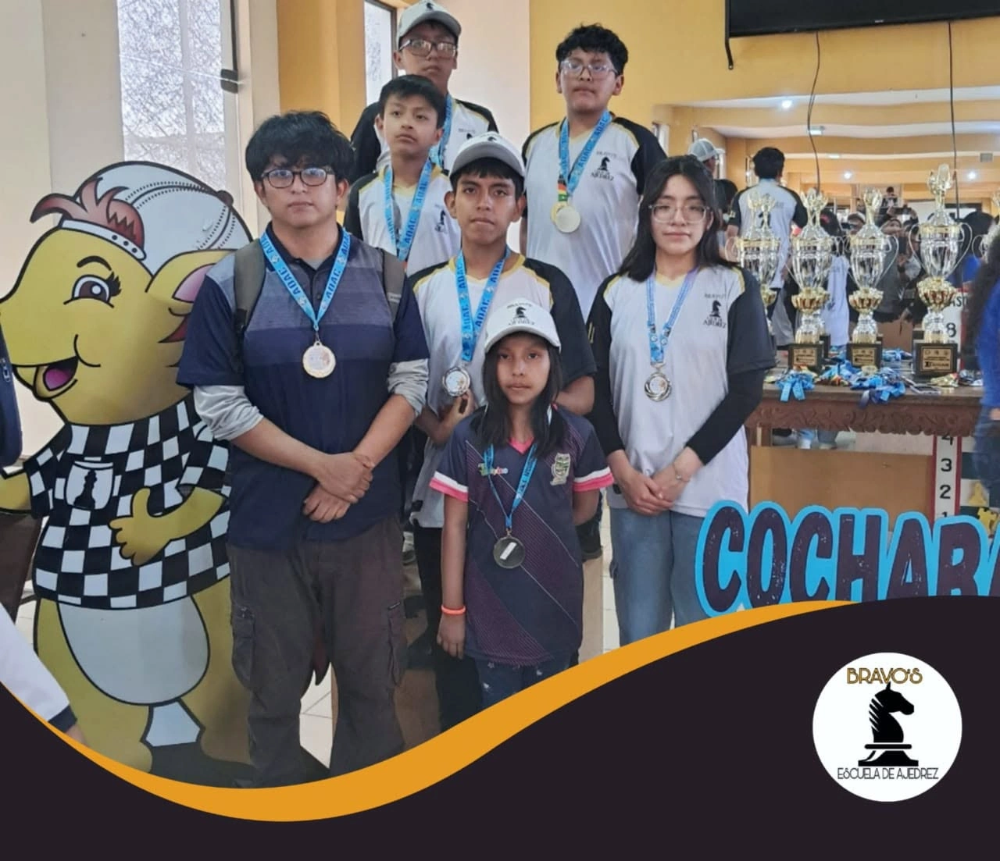
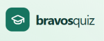

01 / DESCUBRIR♙
Mis primeras jugadas
Para quienes quieren conocer el tablero y dar sus primeros pasos en el ajedrez.
- Las piezas y sus movimientos
- Reglas, jaque y jaque mate
- Primeras partidas y desafíos
CLASES VIRTUALES · PASIÓN POR EL AJEDREZ
Descubre el ajedrez con Bravo’s en clases virtuales. Conéctate desde donde estés para cultivar la curiosidad, disfrutar cada desafío y crecer dentro y fuera del tablero.
El primer movimiento es tuyo.
Nosotros te acompañamos en el camino.

Aprender. Jugar.
Crecer juntos.
NOVEDADES DEL CLUB
Noviembre 2026Muy pronto compartiremos nuestro anuncio de noviembre. Mientras tanto, descubre las clases virtuales y consulta con el club.
Consultar por WhatsApp ↗01 / NUESTRA ESENCIA
En Bravo’s, el ajedrez es una oportunidad para aprender a decidir, afrontar desafíos y volver a intentarlo.
La formación también está en lo que ocurre entre una jugada y otra: escuchar, respetar al rival y aprender de los errores. Esa mirada acompaña la labor del Club de Ajedrez Bravo’s y su comunidad.
Explora nuestros temarios ↓02 / MUCHO MÁS QUE UN JUEGO
Cada posición invita a observar, comparar posibilidades y elegir. El tablero se convierte en un lugar para practicar habilidades, una partida a la vez.
Detenerse en los detalles antes de tomar una decisión.
Imaginar alternativas y anticipar sus consecuencias.
Aceptar los desafíos y valorar el proceso de aprender.
Elige una pieza y toca una casilla iluminada para moverla.
UN COMPLEMENTO PARA NUESTRAS CLASES VIRTUALES

Bravos Quiz convierte las clases virtuales en partidas interactivas de preguntas. El profesor crea un cuestionario, comparte un PIN y cada alumno entra desde su dispositivo, elige un personaje y participa en tiempo real. Al responder, todos pueden seguir el avance y ver la clasificación.
Es una forma entretenida de repasar aperturas, tácticas y estrategia, mientras toda la clase participa.
¡Aprende, juega y demuestra tu ingenio!
Un PIN.
Toda la clase participa.
Próximamente: una demostración de la app en acción, con explicación paso a paso.
Entra con un PINDesde el dispositivo de cada alumno.
Elige tu personajeParticipa en las preguntas en tiempo real.
Sigue la clasificaciónRepasa y demuestra lo que aprendiste.
03 / TU SIGUIENTE MOVIMIENTO
No necesitas saberlo todo para empezar.
Explora qué te gustaría aprender y consulta
el grupo adecuado para ti.
Para quienes quieren conocer el tablero y dar sus primeros pasos en el ajedrez.
Para quienes ya juegan y quieren entender mejor lo que ocurre en cada posición.
Para quienes desean profundizar en el juego y explorar el ajedrez competitivo.
Rutas orientativas de aprendizaje. Consulta con la escuela los grupos, edades, contenidos y cupos disponibles.
Aprende ajedrez en línea, desde donde estés.
Consulta el grupo adecuado para tu experiencia.
04 / NUESTROS MÓDULOS
Conoce cada temario y encuentra
tu punto de partida en el ajedrez.
Columnas, filas, diagonales, centro y campos.
Torre, alfil, dama, rey, peón y caballo. Lectura de jugadas.
Valor absoluto y valor dinámico.
Enroque, promoción del peón y captura al paso.
Soluciones al jaque.
Apertura, juego medio y finales.
Mate pastor, mate con dos torres y mate con dama.
Faltas y tablas.
Torneos de práctica
Consultar por WhatsApp ↗Piezas menores, control del centro y enroque.
Peones bloqueados, aislados, en cadena, doblados y retrasados.
Ataque doble, clavada, ataque a la descubierta, sacrificio y enfilada.
Práctica de resolución de jugadas.
Mate con una torre, mate con alfiles y mate con caballo y alfil.
Torneos de práctica. Variantes: tres jaques y carrera de reyes.
Táctica · Finales · Torneos de práctica
Consultar por WhatsApp ↗Aperturas · Estrategia · Finales
Consultar por WhatsApp ↗Formación 100 % virtual. Consulta por WhatsApp la secuencia de módulos, los grupos y los horarios disponibles.
05 / LA VIDA EN BRAVO’S
Clases, torneos y momentos que nos unen.
Así se vive nuestra pasión por el ajedrez.
Cada encuentro, una oportunidad para aprender y compartir.
Más momentos en Facebook ↗06 / ASÍ SE APRENDE EN LÍNEA
Un problema sobre el tablero. Una idea que se comparte. La satisfacción de descubrir un nuevo movimiento.
Pronto compartiremos un video breve de nuestras clases virtuales: una mirada cercana a cómo se juega y se aprende en Bravo’s.
Mientras tanto, conversemos ↗ANTES DE EMPEZAR
Todo gran recorrido empieza
con un poco de curiosidad.
No. Cuéntale a la escuela si empiezas desde cero o si ya tienes experiencia para que pueda orientarte sobre las opciones disponibles.
Indica qué sabes del juego y qué te gustaría aprender. La escuela podrá confirmar el grupo que mejor se ajuste a tu experiencia y objetivos.
Sí. La formación se ofrece únicamente en modalidad virtual. Consulta por WhatsApp las edades admitidas, los grupos, los horarios y cómo conectarte a las clases.
Pulsa uno de los botones de consulta para abrir el WhatsApp del club. Allí podrás confirmar el temario, la tarifa vigente, los horarios y el proceso de inscripción a las clases virtuales.
CONTACTO DIRECTO · SOLO POR WHATSAPP
Cuéntanos qué buscas. Te orientaremos sobre los temarios, los grupos y los horarios de nuestras clases virtuales.
↗WhatsApp+591 72560021